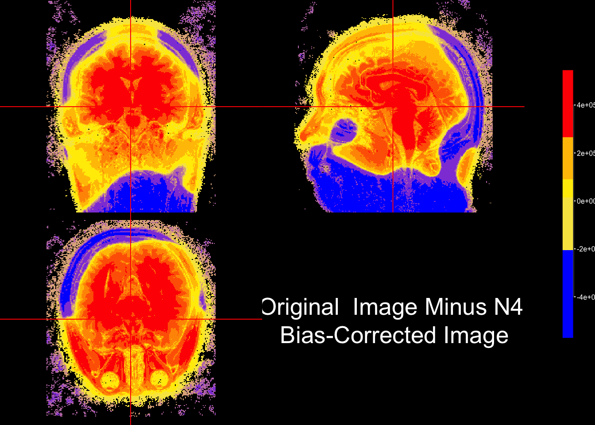
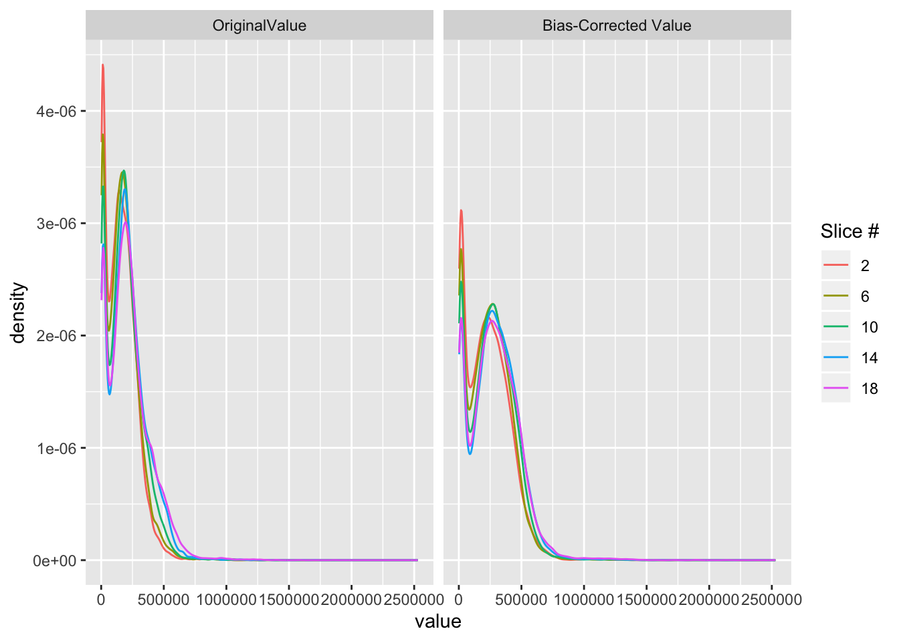

Lecture 6 Inhomogeneity/Bias Field Correction
#set fsl path before running fslr in RStudio
library(fslr)
if(!have.fsl()){
options(fsl.path = '/usr/local/bin')
}
#Check file paths for data downloaded from
library(oro.nifti)
fpath = "Neurohacking_data/kirby21/visit_1/113"
fname = "113-01-MPRAGE"
nim = readNIfTI(file.path(fpath,fname), reorient=FALSE)6.1 Some statistics using FSL
## [1] 143789.2## FSLDIR='/usr/local/fsl'; PATH=${FSLDIR}/bin:${PATH};export PATH FSLDIR; sh "${FSLDIR}/etc/fslconf/fsl.sh"; FSLOUTPUTTYPE=NIFTI_GZ; export FSLOUTPUTTYPE; ${FSLDIR}/bin/fslstats "/private/var/folders/wk/jzm8xd01507b9nx7qmycj7700000gn/T/Rtmp3GNcsB/file2abfa28b34.nii.gz" -m## [1] "143789.231769"## FSLDIR='/usr/local/fsl'; PATH=${FSLDIR}/bin:${PATH};export PATH FSLDIR; sh "${FSLDIR}/etc/fslconf/fsl.sh"; FSLOUTPUTTYPE=NIFTI_GZ; export FSLOUTPUTTYPE; ${FSLDIR}/bin/fslstats "/Users/vgonzenb/R/neurohackingcoursera/Neurohacking_data/kirby21/visit_1/113" -m## Warning in system(cmd, intern = TRUE): running command 'FSLDIR='/usr/local/
## fsl'; PATH=${FSLDIR}/bin:${PATH};export PATH FSLDIR; sh "${FSLDIR}/etc/fslconf/
## fsl.sh"; FSLOUTPUTTYPE=NIFTI_GZ; export FSLOUTPUTTYPE; ${FSLDIR}/bin/fslstats "/
## Users/vgonzenb/R/neurohackingcoursera/Neurohacking_data/kirby21/visit_1/113" -m'
## had status 255## character(0)
## attr(,"status")
## [1] 255## Usage: fslstats [preoptions] <input> [options]preoption -t will give a separate output line for each 3D volume of a 4D timeseriespreoption -K < indexMask > will generate seperate n submasks from indexMask, for indexvalues 1..n where n is the maximum index value in indexMask, and generate statistics for each submaskNote - options are applied in order, e.g. -M -l 10 -M will report the non-zero mean, apply a threshold and then report the new nonzero mean-l <lthresh> : set lower threshold-u <uthresh> : set upper threshold-r : output <robust min intensity> <robust max intensity>-R : output <min intensity> <max intensity>-e : output mean entropy ; mean(-i*ln(i))-E : output mean entropy (of nonzero voxels)-v : output <voxels> <volume>-V : output <voxels> <volume> (for nonzero voxels)-m : output mean-M : output mean (for nonzero voxels)-s : output standard deviation-S : output standard deviation (for nonzero voxels)-w : output smallest ROI <xmin> <xsize> <ymin> <ysize> <zmin> <zsize> <tmin> <tsize> containing nonzero voxels-x : output co-ordinates of maximum voxel-X : output co-ordinates of minimum voxel-c : output centre-of-gravity (cog) in mm coordinates-C : output centre-of-gravity (cog) in voxel coordinates-p <n> : output nth percentile (n between 0 and 100)-P <n> : output nth percentile (for nonzero voxels)-a : use absolute values of all image intensities-n : treat NaN or Inf as zero for subsequent stats-k <mask> : use the specified image (filename) for masking - overrides lower and upper thresholds-d <image> : take the difference between the base image and the image specified here-h <nbins> : output a histogram (for the thresholded/masked voxels only) with nbins-H <nbins> <min> <max> : output a histogram (for the thresholded/masked voxels only) with nbins and histogram limits of min and maxNote - thresholds are not inclusive ie lthresh<allowed<uthresh6.2 Perform inhomogeneity correction
## FSLDIR='/usr/local/fsl'; PATH=${FSLDIR}/bin:${PATH};export PATH FSLDIR; sh "${FSLDIR}/etc/fslconf/fsl.sh"; FSLOUTPUTTYPE=NIFTI_GZ; export FSLOUTPUTTYPE; ${FSLDIR}/bin/fast -B --nopve --out="/var/folders/wk/jzm8xd01507b9nx7qmycj7700000gn/T//Rtmp3GNcsB/file2abf41f5c0b9" "/private/var/folders/wk/jzm8xd01507b9nx7qmycj7700000gn/T/Rtmp3GNcsB/file2abfa1c3566.nii.gz";6.3 Plot difference between images in R
we can use colors to visually inspect the difference between two images. In this case, the bias-corrected image was substracted from the original image and the resulting intensities (i.e. areare colored based on their sign. Quantiles are used to provide to derive the color palette.
sub_bias = niftiarr(nim, nim-fast_img)
#quantile the difference image using these breaks
q = quantile(sub_bias[sub_bias != 0], probs = seq(0,1,0.1))
#install.packages("scales")
library(scales)
#get a gradient palette to map onto divergence between images
fcol = scales::div_gradient_pal(low="blue", mid="yellow", high="red")
ortho2(nim, sub_bias,
col.y=alpha(fcol(seq(0,1, length = 10))), #color for second arg
ybreaks= q,
ycolorbar= TRUE,
text = paste0("Original Image Minus N4", "\n Bias-Corrected Image")
)
6.4 Plotting histograms of intensities for original and bias-corrected images
# choose a subset of slices to be plotted
slices = c(2,6,10,14,18)
# for each slice number save that slice from the original and bias-corrected images into an array
vals = lapply(slices, function(x){
cbind(img = c(nim[,,x]),
fast = c(fast_img[,,x]),
slice = x)
})
# row bind all elements of the vals list to get a data.frame
vals = do.call("rbind", vals)
vals = data.frame(vals)
# filter out values below 0
vals = vals[vals$img > 0 & vals$fast > 0,]
# Change column names
colnames(vals)[1:2] = c("OriginalValue", "Bias-Corrected Value")
v = reshape::melt(vals, id.vars = "slice")
library(dplyr)
library(ggplot2)
g = v %>% ggplot(aes(x = value,
col = factor(slice))) +
geom_line(stat = "density") +
facet_wrap(~variable) +
scale_colour_discrete(name = "Slice #")
g
After bias field correction the intensity curves line up better across slice. Also, the relative intensities are affected such that the highest intensity.